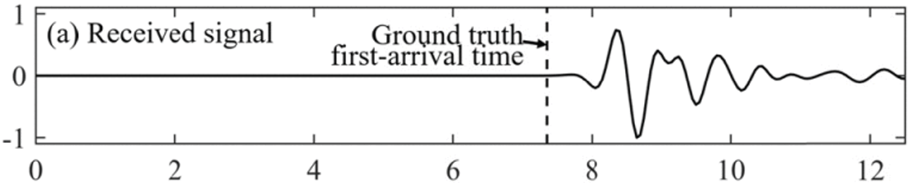

Qiyu Rao
The cognitive workload can directly affect human working performance. Wearing face masks is a requirement for jobs like medical practitioners. And nowadays, wearing face masks is common protection against the COVID-19 pandemic. Therefore, it is necessary to investigate the impact of long-term mask-wearing on cognitive workload. SpO2 is a good indicator of cognitive workload.
We designed a protocol that set sessions with high and low cognitive workload demands. The subjects were asked to perform the protocol with and without wearing face masks.
These results indicated that long-term mask-wearing had a detectable impact on subjects with the high cognitive workload, while for the low cognitive workload, the impact was not observed. The sensor site comparison metrics suggested that the signals derived from the in-ear sensor have the priorities of signal purity, cross-subject stability, and robustness to irregular movements.
We designed and built an image scanning instrument, a Computed Tomography (CT) Ring Sensor Array, for Medical Ultrasound Imaging.
The ring sensor could move up and down to record ultrasound signals along the breast. There was a propagation path between each pair of sensors. We first obtained the Travel Time Map (TTM) of sound along each path, which needed the first-arrival time of each signal. Bi-LSTM combined with the Attention Mechanism method was proposed to get the first-arrival time.
With the TTMs, we reconstructed the sound speed map along each path. The reconstruction was an ill-posed problem. Regularization methods were used to solve the ill-posed equations and their results were compared. The used regularizations and their performances were shown below.
| Regularizations | Mean Square Error | Structural Similarity Index |
|---|---|---|
| Tikhonov | 9.3971 | 0.7834 |
| L-1 norm | 6.8609 | 0.8443 |
| Total Variation | 6.3420 | 0.8619 |
| L1-L2 hybrid | 6.7526 | 0.8452 |
created with
Website Builder Software .